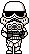
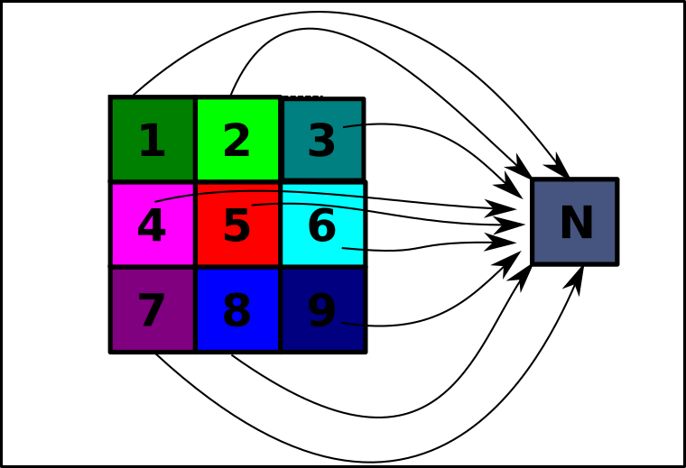

Les images matricielles
Avant toutes choses, nous allons utiliser le module pillow de Python.
Nous allons donc l'installer dans Thonny, en utilisant le menu Tools > Manage Packages, et dans la barre de recherche, chercher le module pillow, et l'installer s'il n'est pas déjà installé.

Notion de BitMap : une image en noir et blanc
Bitmap
Analyser une première image
Considérons l'image suivante :
- Téléchargez ici cette image et sauvegardez-la dans un dossier
BitMapque vous aurez créé. - Quel est le format de cette image ? Recherchez sa signification sur le web.
- Quelles en sont les dimensions en pixels ? Quelle est sa taille en octets ?
- Ouvrez l'image grâce au logiciel
Hex Editor Neo(que vous pouvez mettre en Français par l'intermédiaire deTools > Settings > Language). Le réglage basique deHex Editor Neodonne les valeurs hexadécimales des différents octets composant l'image. Dans la colonne située à droite de ces valeurs hexadécimales, on trouve une représentation de ces octets au format ANSI, c'est-à-dire sous forme de caractères. Que retrouve-t-on au tout début de cette colonne ? -
En cliquant droit sur les groupes d'octets, effectuer le réglage suivant :
Afficher comme > DécimaleColonnes > 32 colonnes
Puis supprimer les 13 premiers octets (juste avant la première valeur 255). Dézoomer avec
CTRL + Molette de souris. Que voit-on apparaitre ? -
Que représente une valeur décimale
255(ouffen hexadécimal) ? - Que représente une valeur décimale
0(ou00en hexadécimal) ?
- RAS
- Format
pgm: Portable Gray Map, permet de faire des images matricielles en nuances de gris. - \(32 \times 32\) pixels, soit \(1024\) pixels. En octets : \(1037\)
- On retrouve les valeurs 255 et 0.
- On voit apparaitre l'image.
- 255 représente un pixel blanc.
- 0 représente un pixel noir.
Les images matricielles
Les images matricielles, ou « cartes de points » (de l'anglais Bitmap) est une image constituée d'une matrice de points colorés. C'est-à-dire, constituée d'un tableau, d'une grille, où chaque case possède une couleur qui lui est propre et est considérée comme un point. Il s'agit donc d'une juxtaposition de points de couleurs formant, dans leur ensemble, une image.
Dans notre cas, l'image est une matrice carrée de taille \(32\times 32\) pixels. Chaque pixel peut donc être repéré par ses coordonnées, comme sur le schéma ci-dessous, où width (largeur en anglais) et height (hauteur en anglais) sont les dimensions de l'image. Attention ! Le sens de l'axe de ordonnées est inversés par rapport aux mathématiques !

Taille des images en noir et blanc
En fait notre image utilise beaucoup plus de place en mémoire qu'elle ne le devrait. En effet, pour représenter 2 couleurs (noir et blanc), un seul bit suffit. 0 représente un pixel noir, et 1 représente un pixel blanc. Le format pgm n'est pas vraiment adapté aux pures images en noir et blanc, puisqu'il utilise 1 octet complet pour représenter la couleur, soit 8 fois plus que ce qui est strictement nécessaire.
Manipulation d'images avec Pillow
Module Pillow
Le module pillow de python permet la manipulation des images. Son guide (en anglais) est disponible ici.
Son utilisation basique est relativement simple, testez par exemple le code suivant :
1 2 3 4 5 6 7 8 9 10 11 12 13 14 15 16 | |
Explicitons alors ce code :
- Ligne 1 : on importe la classe
Imagedu modulePIL(c'est-à-direpillow). - Ligne 3 : on utilise la méthode
opende la classeImagepour ouvrir l'imageYingYang.pgmet la stocker dans la variableoriginale, qui est donc un objet de typeImage. - Ligne 4 : on utilise l'attribut
sizedes objetsImageextraire la largeur et la hauteur de notre image, et les stocker dans les variableswidthetheight, de typeint. - Ligne 6 :
copieest un nouvel objet de typeImage, qui possède les mêmes caractéristiques que l'image originale : sonmode(nous reviendrons dessus plus loin), et sa taille grâce à l'attributsize. - Lignes 8-9 : on va parcourir l'image originale pixel par pixel, en effectuant le parcours colonnes par colonnes.
- Lignes 10 : on récupère la valeur du pixel de coordonnées \((x;y)\) de l'image originale grâce à la méthode
getpixel, et on regarde si il est blanc (==255). - Ligne 11 : si la condition précédente est vraie, on va fixer la couleur du pixel de coordonnées \((x;y)\) de la copie à noir (
0), grâce à la méthodeputpixel(Attention !putpixeletgetpixeln'acceptent que des tuples pour les coordonnées ! Si vous oubliez la paire de parenthèses, vous risquez d'obtenirTypeError: putpixel() takes 3 positional arguments but 4 were given). - Lignes 12-13 : si la condition est fausse, on va fixer la couleur du pixel de coordonnées \((x;y)\) de la copie à blanc (
255). - Ligne 15 : on sauvegarde la copie sous le nom
YangYing.bmp. Vous devriez trouver ce fichier dans votre dossier. On notera quepillowaccepte de changer le type de fichier (ici on est passé depgmàbmp). - Ligne 16 : on affiche l'image
copie.
Factorisation du code
Transformez le code précédent en créant une fonction inverseNB(img) qui prend en argument un objet img de type Image et qui renvoie un nouvel objet de type Image de même dimension et même mode que l'argument, mais ayant ses couleurs noirs et blanc inversées.
def inverseNB(img) :
width, height = img.size
copie = Image.new(img.mode, img.size)
for x in range(width) :
for y in range(height) :
if img.getpixel((x,y)) == 255 :
copie.putpixel((x, y), 0)
else :
copie.putpixel((x, y), 255)
return copie
Pour les cracks : améliorons le code
En fait le code ci dessus n'est valable que pédagogiquement, pour comprendre les . Il est tout à fait possible de se passer de la structure conditionnelle des lignes 10 à 13, qui peuvent être effectuées en une seule ligne ! Comment faire ?
def inverseNB(img) :
width, height = img.size
copie = Image.new(img.mode, img.size)
for x in range(width) :
for y in range(height) :
copie.putpixel((x, y), 255 - img.getpixel((x,y)))
return copie
Les niveaux de gris
Un exemple
Une nouvelle image
On considère maintenant l'image suivante :

téléchargeable ici.
- Quelle est la dimension de cette image en pixels ? Quelle est sa dimension en octets ?
- Ouvrez-là avec
Hex Editor Neo. Quelle est la principale différence avec l'image précédente ? - Testez sur cette image la fonction
inverseNB. Obtient-on un négatif de cette image ?
- \(29 \times 54\) pixels, soit 1566 pixels, pour une taille de 1579 octets.
- Il y a d'autres valeurs entre 0 et 255.
- Non.
Images en niveaux de gris - Grayscale
Pour représenter une palette de 256 couleurs allant du noir au blanc, on utilise un octet complet
- la valeur 0 représente le noir ;
- la valeur 255 représente le blanc ;
- une valeur proche de 0 représente un gris foncé
- une valeur proche de 255 représente un gris clair.
Une telle image, dite en « niveaux de gris », utilise 1 octet par pixel.
Manipulation d'une image en niveau de gris
Manipuler les images
- Téléchargez une image quelconque libre de droits sur internet - peu importe son format.
-
On cherche à obtenir un négatif de l'image. Pour ce faire, il faut utiliser une fonction mathématique. En effet, ce que nous voulons, c'est une fonction qui transforme :
- 0 en 255
- 1 en 254
- 2 en 253
- ...
- 254 en 1
- 255 en 0
Quelle est cette fonction ?
-
Créer alors une fonction python
négatif(img)qui renvoie le négatif de l'objetimgde typeImage. -
Éclaircissement d'une image :
Pour éclaircir une image, il faut transformer les valeurs grayscale de chaque pixel en les augmentant. Une possibilité simples est de les augmenter d'un terme constant, comme 20 par exemple. Ainsi, un pixel initialement à 0 sera changé à 20, et un pixel à 147 sera changé à 167 (pillow n'autorisera pas les dépassement au delà de 255, donc un pixel à 250 sera bien transformé à 255).
Créer alors une fonction python
éclaircir(img, t=20)qui renvoie un nouvel objet de typeImage, version éclaircie de l'objetimgde typeImagepassé en argument, et utilisant l'argument optionnelt. -
Assombrissement d'une image :
Créer de même une fonction python
assombrir(img, t=20)qui renvoie un nouvel objet de typeImage, version assombrie de l'objetimgde typeImagepassé en argument, et utilisant l'argument optionnelt. -
Était-on vraiment obligé de faire deux fonctions ?
- RAS
- \(f : x \mapsto 255 -x\)
- La fonction :
def negatif(img) : width, height = img.size copie = Image.new(img.mode, img.size) for x in range(width) : for y in range(height) : copie.putpixel((x, y), 255 - img.getpixel((x,y))) return copie - La fonction :
def eclaircir(img, t=20) : width, height = img.size copie = Image.new(img.mode, img.size) for x in range(width) : for y in range(height) : copie.putpixel((x, y), t + img.getpixel((x,y))) return copie - La fonction :
def assombrir(img, t=20) : return eclaircir(img, -t) - Non, au vu de la question précédente
Pour les cracks
Nos éclaircissement et assombrissement précédents ne sont guère satisfaisants... car nous ne jouons pas sur le contraste. Il existe bien de fonctions mathématiques permettant d'améliorer notre méthode. Vous pouvez vous inspirer du travail de Paul Milan, très mathématique, ou bien tester les fonctionnalités du module pillow, en suivant par exemple ce tutoriel.
Images en couleur
Il est temps de mettre un peu de couleur !
Synthèse additive RGB
Un pixel de couleur est représenté par un triplet \((R;G;B)\), où \(R\), \(G\) et \(B\) sont des valeurs de \(0\) à \(255\) représentant respectivement les couleurs rouges, vertes et bleues. Un tel système permet de représenter \(256^3 = 16~277~216\) nuances de couleurs différentes, par synthèse additive des couleurs. Ce format est adapté à la lecture sur écran (on utilise un système différent pour l'impression des images, le système CYMB - Cyan Yellow Magenta Black - qui utilise la synthèse soustractive).
De ce fait, dans un format non compressé comme le format BMP, chaque pixel est représenté par 3 octets.
Exemple
On considère l'image suivante :

L'image est de dimension \(320 \times 100\) et pèse 96 ko, ce qui correspond \(320 \times 100 \times 3 = 96~000~o\) (en n'oubliant pas les méta-données).
RGB et pillow
- Téléchargez l'image suivante :
-
Créer un code dans Thonny ouvrant l'image et affichant cette image :
from PIL import Image originale = Image.open("TroisCercles.bmp") ## Attention si vous avez changé le nom ! originale.show() -
.
- Insérez dans ce code la commande :
Que renvoie-t-elle ?
print(image.getpixel((150,50))) - A l'aide d'un éditeur d'images, repérer dans l'image précédente le pixel de coordonnées \((150 ; 50)\). Quelle est sa couleur ?
- Insérez dans ce code la commande :
- Reprendre la question 3 avec les pixels suivants :
- \((50 ; 100)\)
- \((250 ; 100)\)
- \((100 ; 130)\)
- \((200 ; 130)\)
- \((50 ; 230)\)
- \((150 ; 150)\)
A venir !
Transparence
Dans certains formats d'image il est possible d'utiliser un quatrième octet pour chaque pixel, qui permet de gérer la transparence(aussi appelée canal alpha) de ce pixel. Cette valeur défini un pourcentage de transparence permettant de voir au travers de ce pixel, et donc de superposer des images.
Par exemple, les deux images suivantes sont construites ainsi : une est construite en jpg, sans transparence, avec fond noir, et la seconde est en png, avec transparence pour le fond de couleur noire :

Dans un format avec transparence, la valeur 0 correspond à un pixel totalement opaque, et une valeur 255 à un pixel totalement transparent.
Compression des images
Compression des images
Les images sont très gourmandes en place mémoire. Un moniteur moderne supportant une résolution 4K a pour dimension \(4~096 \times 2~160\) pixels, soit plus de 8,8 millions de pixels. Une image de fond d'écran couleur, avec transparence, non compressée, représente donc plus de \(8,8 \times 4 \simeq 35\) millions d'octets, soit plus de 35 Mo.
Pourtant une image comme celle-ci (crédits inconnus), pourtant bien de la dimension \(4~096 \times 2~160\), pèse seulement 4,52 Mo.
Ceci est du à un processus appelé compression d'images, qui peut être effectué de plusieurs manières différentes :
- en réduisant le nombre de couleurs réelles de l'image (on crée une palette spécifique pour cette image, dont la table de correspondance est insérée dans les méta-données de l'image) ;
- en groupant les pixels contigus de même couleur (100 pixels de la même couleur sur la même ligne occupent a minima 300 octets, alors que l'information « Il y a 100 pixels sur cette ligne de la même couleur à partir de la position \((x_0;y_0)\) » peut occuper uniquement 6 octets - 1 pour le nombre 100, un pour \(x_0\), un pour \(y_0\) et 3 pour la couleur RGB) ;
- etc...
Par exemple, l'algorithme de compression JPEG redéfinit les couleurs des pixels en leurs ré-attribuant une couleur moyenne qui est calculée en fonction des couleurs des pixels voisins, et qui dépend d'un taux de compression définissable par l'utilisateur. Plus le taux de compression est élevé, plus l'image sera dégradée (compression avec perte):

Original : 1,42 Mo
Format déjà compressé

Copie 1 : 205 ko
Compression depuis original : 90%
Copie 2 : 162 ko
Compression depuis original : 99%
Il existe cependant des algorithmes de compression sans perte, comme par exemple avec le format png.
Les formats des fichiers images
Il existe de nombreux formats d'images numériques de types matriciels. Les principaux sont donnés dans le tableau suivant :
| Type | Extension | Compression | Transparence | Utilisation |
|---|---|---|---|---|
| JPEG | .jpg , .jpeg , .jfif , .pjpeg , .pjp | avec pertes | Non | Web, aperçus, impressions (si peu de compression) |
| PNG | .png | sans pertes | Oui | Besoin de transparence fine, peu de couleurs |
| GIF | .gif | avec pertes | Oui (partielle) | Images animées, fichiers de petites tailles |
| TIFF | .tiff, .tif | sans pertes | Non | Images hautes définition, scans précis |
| RAW | .raw, .data, ... | Non | Non | Images brutes, éditions de photos |
| BMP | .bmp | Non | En partie | Paint... |
Les logiciels de retouches et d'édition d'images matricielles sont nombreux, le plus connu étant le célèbre Photoshop, mais qui est un logiciel propriétaire.
Son équivalent libre est GIMP. Il offre les mêmes fonctionnalités, et ne demande qu'une simple adaptation à l'interface...
Images Vectorielles
Dans le tableau précédent, vous n'avez que des format d'images matricielles. Il existe aussi un autre type d'images numériques appelé images vectorielles, construites sur un tout autre principe.
Une image vectorielle est une image pour laquelle les éléments constitutifs sont stockée sous la forme d'équations.
Ainsi l'image du manchot Tux, mascotte officielle du noyau Linux (à ne pas confondre avec GNU/Linux), est une image vectorielle au format SVG, qui peut être ouverte par Notepad++. On trouve dans le fichier la description des différentes courbes, surfaces, etc... qui décrivent l'image.
L'avantage d'une telle image est qu'elle ne pixelisera pas, quel que soit le zoom qui lui est appliqué (en théorie...).
De telles images peuvent être crées et manipulées à l'aide du logiciel libre Inkscape.
Manipulation des images
Création d'images
Exemple de création d'image RGB avec Pillow
Le code suivant permet de créer une image au format png des trois cercles colorés de la synthèse additive :
1 2 3 4 5 6 7 8 9 10 11 12 13 14 15 16 17 18 19 20 21 | |
Les lignes importantes sont les suivantes :
- Ligne 10 : on crée une nouvelle image utilisant le format RGB, de la largeur et de la hauteur donnée (sous la forme d'un tuple de dimension 2). On pourrait créer une image avec transparence en utilisant le format
RGBA- voir ici - Lignes 11-12, on parcours l'image colonne par colonne,
xétant l'abscisse (= le numéro de colonne) etyétant l'ordonnée (= le numéro de ligne). - ligne 16 : on place à la position \((x;y)\) un pixel dont la couleur est donnée par le tuple
(R, G, B), conformément au mode choisi en ligne 10. - ligne 21 : l'objet
imagerenvoyé par la fonctionmakeCirclesavec l'argument 100 est sauvegardée sous le nomTroisCercles.pnggrâce à la méthodesave.
Un peu de maths
L'image est construite à partir d'un triangle équilatéral de côté \(a\) dont les sommets sont les centres des trois cercles RGB, et dont les coordonnées sont respectivement \((2a ; (1+\cfrac{\sqrt{3}}{2}a)\), \((\cfrac{3}{2}a ; a)\) et \((a ; (1+\cfrac{\sqrt{3}}{2}a)\).
Créer des images simples
- Créer le drapeau français sous la forme d'une image de taille \(300 \times 200\).
- Créer le drapeau néerlandais sous la forme d'une image de taille \(300 \times 210\).
- Créer un damier noir et blanc (ou toute autre paire de couleurs), de dimension \(600 \times 400\), et donc chaque carré à une taille de 20 pixels (Indice : pensez à la division euclidienne et à l'opérateur modulo %).
- Le drapeau français :
def drapeauFR() : drapeau = Image.new('RGB', (300,200)) for x in range(300) : for y in range(200) : drapeau.putpixel((x, y), (255*(x>=100), 255*(100<=x<200), 255*(x<200))) drapeau.show() - Le drapeau Néerlandais
def drapeauNL() : drapeau = Image.new('RGB', (300,210)) for x in range(300) : for y in range(210) : drapeau.putpixel((x, y), (255*(y<=140), 255*(70<=y<140), 255*(y>70))) drapeau.show() -
Le damier de taille 20 pixels :
def damier() : damier = Image.new('RGB', (600,400)) for x in range(600) : for y in range(400) : c = x//20 # Numéro de colonne l = y//20 # Numéro de ligne if c%2 == l%2 : damier.putpixel((x, y), (0,0,0)) else : damier.putpixel((x, y), (255,255,255)) damier.show()
Symétries
Symétries axiales et centrales
Sélectionnez une image libre de droit sur le web.
- Créez une fonction
symetrieVerticalequi prend en argument un objet de typeImageet qui renvoie un nouvel objet de typeImagequi correspond à l'image symétrique de l'originale par une symétrie d'axe médian vertical. - Créez une fonction
symetrieHorizontalequi prend en argument un objet de typeImageet qui renvoie un nouvel objet de typeImagequi correspond à l'image symétrique de l'originale par une symétrie d'axe médian horizontal. - Créez une fonction
symetrieCentralequi prend en argument un objet de typeImageet qui renvoie un nouvel objet de typeImagequi correspond à l'image symétrique de l'originale par une symétrie de centre correspondant au centre de l'image.
-
Symétrie Verticale :
def symetrieVerticale(originale) : width, height = originale.size nouvelle = Image.new(originale.mode, originale.size) for x in range(width) : for y in range(height) : p = originale.getpixel((x,y)) nouvelle.putpixel((width-1-x, y) , p) return nouvelle -
Symétrie horizontale :
def symetrieHorizontale(originale) : width, height = originale.size nouvelle = Image.new(originale.mode, originale.size) for x in range(width) : for y in range(height) : p = originale.getpixel((x,y)) nouvelle.putpixel((x, height-1-y) , p) return nouvelle -
Symétrie centrale :
def symetrieCentrale(originale) : return symetrieHorizontale(symetrieVerticale(originale))
Filtres colorés
Filtre vert
Quand on applique un filtre vert à une image numérique, on parcourt l'image entière en ne récupérant pour chaque pixel que sa composante verte, et en mettant le rouge et le bleu à 0. Par exemple, avec une image de type png et en gardant le canal alpha :


Filtres de couleur
-
Créer une fonction
filtreCouleurqui prend en argument un objet de typeImageet un tuple(r, g, b, a), oùr, g, betasont des booléens, et qui renvoie une nouvelle image pour lesquelles les couleurs RGBA sont conservées si le booléen correspondant estTrue. Par exemple, l'image de Naruto verte ci-dessus est obtenue par le code :naruto = Image.open("Naruto.png") narutoGreen = filtreCouleur(naruto, (False, True, False, True)) narutoGreen.show()Créer ainsi des images
NarutoRouge.png,NarutoBleu.png,NarutoJaune.png,NarutoMagenta.pngetNarutoCyan.png -
Créer maintenant l'image suivante à partir de
pillow(indice : pensez à l'opération modulo !) : -
Créer une fonction
negatifqui prend en argument une image et inverse les octets de chacune de ses composantes, en conservant le canal alpha. On obtiendra par exemple :
-
Filtre couleur :
def filtreCouleur(img, filtre) : fr, fg, fb, fa = filtre copie = Image.new(img.mode, img.size) width, height = img.size for x in range(width) : for y in range(height) : pr, pg, pb, pa = img.getpixel((x,y)) copie.putpixel((x,y), (pr*fr, pg*fg, pb*fb, pa*fa)) # ou copie.putpixel((x,y), tuple(f*p for f, p in zip(filtre, img.getpixel(x,y)) return copie
Agrandissements et réductions d'un facteur 2
Version naïve
Agrandissement d'un facteur 2
Le principe d'agrandissement d'un facteur 2 est le suivant : chaque pixel va être dupliqué 4 fois comme sur le schéma suivant :

Compléter la fonction doubleSimple(image) qui prend en argument un objet de type Image et renvoie un autre objet de type Image deux fois plus grand utilisant la technique montrée ci-dessus :
1 2 3 4 5 6 7 8 9 10 | |
1 2 3 4 5 6 7 8 9 10 | |
Réduction d'un facteur 2
Encore une fois le principe est simple, on ne garde qu'un pixel sur deux, au choix, les pixels de rang pairs ou bien impairs (ici on garde ceux de rang impair):

Créer une fonction reductionSimple(image) qui prends en argument un objet de type Image est qui renvoie sa version réduite avec la méthode ci-dessus.
python linenums = "1"
def reductionSimple(image) :
w, h = image.size
reduction = Image.new('RGBA', (w//2, h//2))
for x in range(w//2) :
for y in range(h//2) :
reduction.putpixel((x,y), image.getpixel((x*2, y*2)))
return reduction
Combiner les deux
- Créer, à partir d'une image de base, une image réduite, puis, à partir de cette image réduite, une nouvelle image agrandie.
- Vérifier que cette dernière est bien de la même taille que l'image originale.
- Comparer alors cette image avec l'originale. La transformation est-elle avec pertes ou sans pertes ?
- Recommencer mais en agrandissant d'abord.
- Comparer les images obtenues en 1 et en 2. Sont-elles identiques ?
A venir !
Version "pour les cracks"
Interpolation
Le principe de l'interpolation est d'augmenter ou de diminuer la matrice initiale d'une image, en créant les nouveaux points à partir de ceux de l'image originale, en y appliquant éventuellement des fonctions mathématiques.
Il existe de nombreuses méthodes d'interpolation en imagerie numérique, certaines nécessitant des algorithmes complexes.
Celles présentées ici font partie des plus simples.
Agrandissement avec interpolation par moyenne
La méthode que nous allons utiliser est la suivante :

Entre deux pixels existants, que ce soit horizontalement, verticalement ou en diagonale, on insère un pixel dont la valeur RGBA est égale à la moyenne des valeurs RGBA des deux pixels qui l'encadrent.
- Créer une fonction
moyenne(px1, px2)qui prend en argument les valeursRGBAde ces deux pixels et renvoie un tuple de dimension 4 correspondant à la moyenne par composanteRGBA. - Créer, en s'inspirant de la fonction à partir de la fonction
doubleSimple, une fonctiondoubleInterpolation(image)qui prend en argument un objet de typeImageet qui renvoie un nouvel objet de dimension double en utilisant la technique précédente. Attention ! Il y a des cas limites à prévoir dans la manipulation des pixels !
A venir !
Réduction avec interpolation par moyenne des voisins
La méthode que nous allons utiliser va consister à reprendre la méthode utilisée dans la réduction simple, c'est-à-dire de prendre un pixel sur deux, mais le pixel écrit dans la nouvelle image sera obtenu en effectuant la moyenne des valeurs RGBA de tous les voisins du pixel choisi :

- Créer une fonction
moyenneVoisin(image, x, y)qui prend en argument un objet de typeImage, et deux entiersxety, et qui renvoie un tuple correspondant à la moyenne des valeursRGBAdes voisins du pixel de coordonnées \((x~;~y)\) de l'imageimage. - A l'aide de la fonction précédente, et en s'inspirant de la fonction
reductionSimple, créer une fonctionreductionInterpolation(image)qui renvoie une image réduite en utilisant la technique précédente.
Combiner les deux
- Créer, à partir d'une image de base, une image réduite, puis, à partir de cette image réduite, une nouvelle image agrandie.
- Vérifier que cette dernière est bien de la même taille que l'image originale.
- Comparer alors cette image avec l'originale. La transformation est-elle avec pertes ou sans pertes ?
- Recommencer mais en agrandissant d'abord.
- Comparer les images obtenues en 1 et en 2. Sont-elles identiques ?
- Comparer maintenant les transformations simples avec les transformations avec interpolation.
A venir !